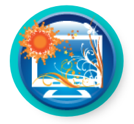
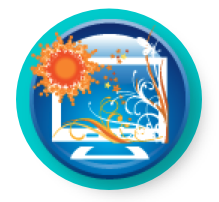

|
 |
 |
 |
 |
 |
[Volver a la página principal del Rango de Uso] [Ver escenarios para Nuevos Modelos/Recursos y Herramientas para el Aprendizaje Autónomo]
Nuevos Modelos y Recursos para el Aprendizaje Autónomo: Comprende tecnologías que facilitan el aprendizaje autónomo de los alumnos incluyendo recursos en línea que pueden ser accedidos por los alumnos las 24 horas del día los 7 días de la semana.
Entornos Virtuales de Aprendizaje [cursor sobre imagen para definición] |
Desarrollo de Habilidades
[cursor sobre imagen para definición] |
Objetos de Aprendizaje
[cursor sobre imagen para definición] |
Biblioteca de Explicaciones en Video
[cursor sobre imagen para definición] |

Escenarios para Herramientas de Aprendizaje Autónomo
| Título (click en el título para ver el escenario) | Categorías incluidas en el escenario [cursor sobre imagen para definición] |
Nivel | Área de Contenido |
| Individualizando la Enseñanza con Explicaciones en Video |    |
Secundaria | Matemática |
| Razón y Proporción en el mundo real |    |
Secundaria | Ciencias Sociales |
| Anatomía de las células animales y vegetales |  |
Primeros años de secundaria | Ciencias Naturales |
| Calculando el Área de los Rectángulos |    |
Primaria | Matemática |
| Explicaciones en Video para Lengua y Literatura | |
Primaria | Lengua y Literatura |